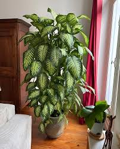

🌳 डायफेनबाखिया झाड
English Name : Dumb Cane
Scientific Name : Dieffenbachia

संक्षिप्त परिचय
डायफेनबाखिया या झाडाला इंग्रजीत Dumb Cane असे म्हणतात. या झाडाचे शास्त्रीय नाव Dieffenbachia आहे. हे झाड Araceae कुलातील आहे. डायफेनबाखिया हे एक सदाहरित शोभेचे झाड आहे. हे झाड प्रामुख्याने घरातील सजावटीसाठी वापरले जाते. डायफेनबाखिया झाड मूळचे मध्य व दक्षिण अमेरिकेतील उष्ण प्रदेशांतील आहे. उष्ण आणि दमट हवामानात हे झाड चांगले वाढते. हे झाड घराच्या आत, कार्यालये, शाळा आणि इमारतींमध्ये लावले जाते. कमी सूर्यप्रकाशातही वाढू शकणारे हे झाड असल्यामुळे घरात ठेवण्यासाठी ते अतिशय लोकप्रिय आहे. या झाडाची पाने मोठी, रुंद आणि आकर्षक असतात. पानांवर हिरव्या रंगासोबत पांढरे, फिकट हिरवे किंवा पिवळसर डाग असतात. यामुळे झाड अतिशय सुंदर दिसते. या झाडाचा खोड भाग मऊ आणि सरळ असतो. झाड साधारणतः ३ ते ६ फूट उंच वाढते. डायफेनबाखिया झाड कुंडीत सहज वाढते. यासाठी जास्त पाण्याची गरज नसते. चांगला निचरा असलेली माती या झाडासाठी योग्य असते. जास्त पाणी दिल्यास मुळे कुजण्याचा धोका असतो. हे झाड पर्यावरणाच्या दृष्टीनेही उपयुक्त आहे. डायफेनबाखिया झाड घरातील हवा शुद्ध करण्यास मदत करते. ते कार्बन डायऑक्साइड शोषून ऑक्सिजन सोडते. त्यामुळे घरातील वातावरण स्वच्छ आणि ताजेतवाने राहते. डायफेनबाखिया झाडाला थेट धार्मिक महत्त्व नाही. मात्र घरात हिरवळ निर्माण करण्यासाठी आणि सकारात्मक वातावरण तयार करण्यासाठी हे झाड लावले जाते. हिरवी झाडे मानसिक शांतता देतात असे मानले जाते. या झाडाचा औषधी वापर फार मर्यादित आहे. काही ठिकाणी परंपरागत औषधांमध्ये याचा उल्लेख आढळतो. मात्र या झाडाचा रस विषारी असतो. या रसामुळे तोंड, जीभ आणि घसा सुन्न होऊ शकतो. त्यामुळेच याला “Dumb Cane” असे नाव पडले आहे. या झाडाचा वापर करताना काळजी घेणे आवश्यक आहे. लहान मुले आणि पाळीव प्राणी यांच्यापासून हे झाड दूर ठेवावे. हाताळताना हातमोजे वापरणे योग्य ठरते. सामाजिकदृष्ट्या डायफेनबाखिया झाड महत्त्वाचे आहे. नर्सरी व्यवसायात या झाडाला मोठी मागणी आहे. शोभेच्या झाडांमध्ये याचे स्थान महत्त्वाचे आहे. घर, कार्यालये आणि सार्वजनिक ठिकाणी यामुळे सौंदर्य वाढते. डायफेनबाखिया झाड कमी देखभालीत वाढणारे असल्यामुळे आधुनिक जीवनशैलीसाठी योग्य मानले जाते. शहरी भागात जागेअभावी मोठी झाडे लावणे शक्य नसते, तेथे हे झाड उपयुक्त ठरते. एकूणच डायफेनबाखिया हे सुंदर, आकर्षक आणि घरातील वातावरण सुधारण्यास मदत करणारे झाड आहे. शोभा, पर्यावरणीय लाभ आणि सामाजिक उपयोग या सर्व दृष्टीने हे झाड महत्त्वाचे मानले जाते.
महत्त्व व उपयोग
🌿 वैशिष्ट्ये
डायफेनबाखिया हे कमी सूर्यप्रकाशातही वाढणारे झाड आहे. याची पाने आकर्षक व शोभिवंत असतात. हे झाड कुंडीत सहज वाढते आणि कमी देखभाल लागते.
🌱 पर्यावरणीय महत्त्व
हे झाड घरातील हवा शुद्ध करण्यास मदत करते. कार्बन डायऑक्साइड शोषून ऑक्सिजन देण्याचे कार्य करते. घरातील प्रदूषण कमी करण्यासाठी उपयुक्त मानले जाते.
🛕 धार्मिक महत्त्व
डायफेनबाखिया झाडाला थेट धार्मिक महत्त्व नाही. मात्र घरात हिरवळ व सकारात्मक वातावरण निर्माण करण्यासाठी हे झाड लावले जाते.
💊 औषधी उपयोग
या झाडाचा परंपरागत औषधांमध्ये मर्यादित वापर आढळतो. मात्र याचा रस विषारी असल्याने औषधी वापर धोकादायक ठरू शकतो. डॉक्टरांच्या सल्ल्याशिवाय वापर टाळावा.
🏡 सामाजिक महत्त्व
घर, शाळा व कार्यालयांच्या सजावटीसाठी हे झाड वापरले जाते. नर्सरी व्यवसायात याला मोठी मागणी आहे. यामुळे रोजगाराच्या संधी निर्माण होतात.